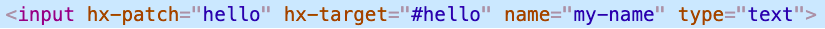

ctmx is a backend compliment to htmx.
It provides a unified, react like format for rendering components on the backend that feels like frontend code but without the restrictions and load times of javascript.
(use 'ctmx.core)
(defcomponent ^:endpoint hello [req ^:simple my-name]
[:div#hello "Hello " my-name])
(make-routes
"/demo"
(fn [req]
[:div {:style "padding: 10px"}
[:label {:style "margin-right: 10px"}
"What is your name?"]
[:input {:type "text"
:name "my-name"
:hx-patch "hello"
:hx-target "#hello"}]
(hello req "")]))
The core of ctmx is the defcomponent macro which expands to both an endpoint and an ordinary function. Try inspecting the above text input. You should see something like the following.

Now try editing the text. On the input's default action (blur) it will issue a request to the "hello" endpoint and update its contents.
This live demo is javascript hosted so the browser logs instead of issuing an actual request. In a regular deployment the code runs on the server and you can observe requests under the 'Network' tab.